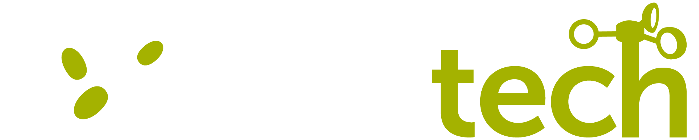

Monitorización automática de esporas de hongos en tiempo real.
El proyecto GO OLIVITECH tiene como objetivo principal el diseño de un sistema de alerta temprana de enfermedades en olivar.
Como objetivo secundario del proyecto, se ha plantea el testeo de sistemas de detección automática de esporas de hongos mediante captadores automáticos. En el proyecto se plantea que si estos sistemas son validados con éxito, se podrán incorporar con posterioridad a los modelos predictivos desarrollados en OLIVITECH.
En esta página se muestran resultados preliminares de dichas mediciones en diferentes puntos de muestreo de Andalucía y Galicia.
Los nuevos puntos de muestreo podrán incorporarse progresivamente a esta plataforma. Una vez se validen los dispositivos, estos resultados se mostrarán en la web oficial de OLIVITECH, como elemento complementario al sistema de alerta.
⚠️ Nota importante: Estos datos deben interpretarse como un resultado piloto. Actualmente no se han obtenido conclusiones definitivas sobre la robustez de las mediciones automáticas de esporas. Esta herramienta se ofrece con fines divulgativos y exploratorios. CONFINANCIACIÓN: La validación, interprestación y recuento de esporas fúngicas se lleva a cabo en el marco del GO OLIVITECH. Sin embargo los dispositivos automáticos se han aquirido financiados por otros fondos: en Andalucía se han financiado con el proyecto PhemPolive (PID2023-152718OA-I00) y en Galcia por la Universidad de Vigo.
Tras la validación de los dispositivos automáticos PollenSense para la detección de esporas de hongos, los datos se integrarán y mostrarán en la web oficial de OLIVITECH.
Ir a la web oficial del proyecto GO OLIVITECH